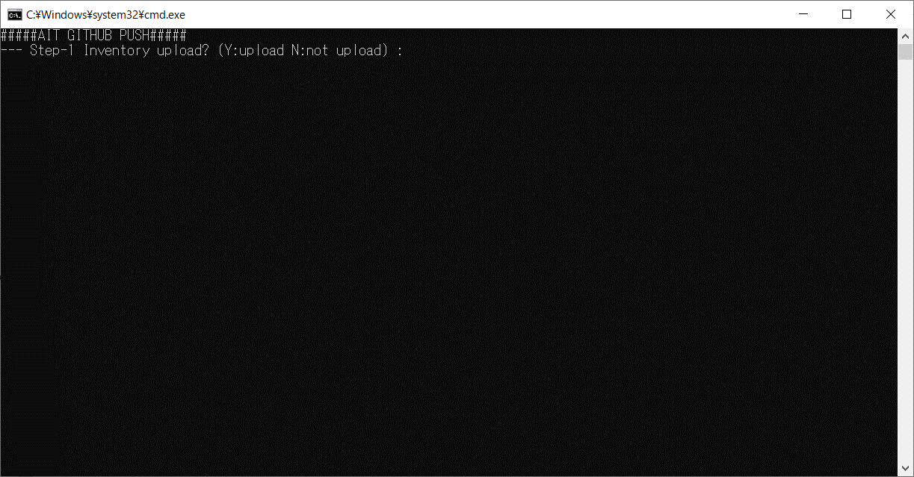
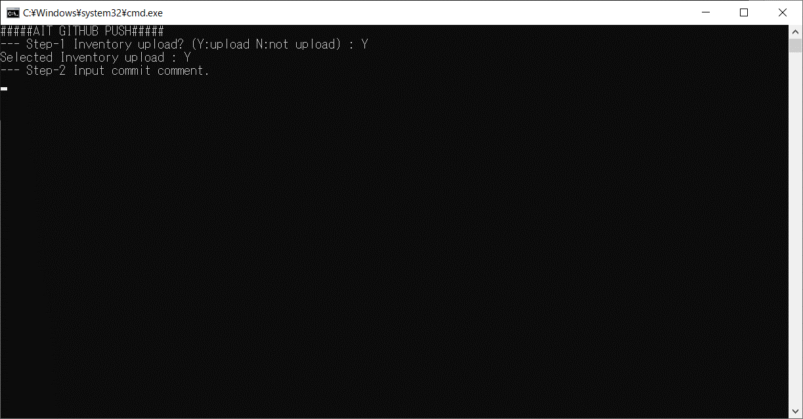
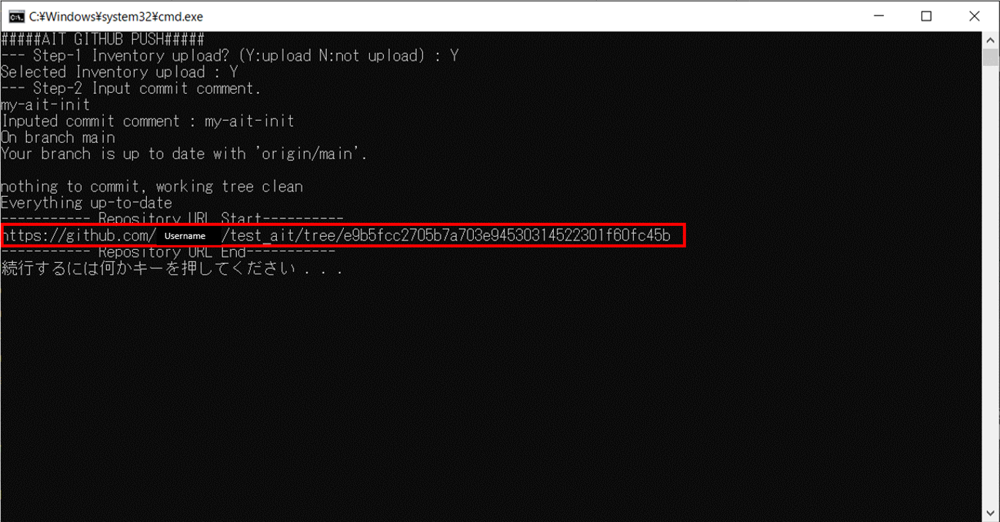
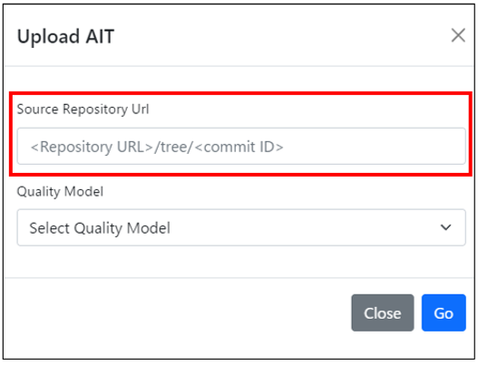

3.7. Publishing AIT¶
This chapter explains the steps to publish the AIT you developed.
Important
When you register your developed AIT on platforms like GITHUB or AIT-HUB, it becomes publicly available. Before publishing the AIT, ensure that no personal or confidential information is disclosed and that the publication aligns with your objectives. Please proceed with these precautions.
Important
Disclaimer :
The publication of AITs on this platform is the responsibility of the developers. The developers guarantee that the information contained in AIT does not infringe any third-party intellectual property rights and does not include any personal or confidential information.
In the event that developers inadvertently publish confidential information, or if AIT is improperly used by a third party, neither this platform nor its operators shall bear any liability. The developers shall bear full responsibility for any direct or indirect damages that may arise from the use of AIT.
Users of this platform understand the potential risks associated with using AIT and agree to use AIT at their own risk.
The publication of AIT is carried out in the following two steps:
Register on GITHUB
Register and manage the created AIT resources on GITHUB.
Register on AIT-HUB
Register the created AIT on AIT-HUB and make it available to AIT-HUB users.
3.7.1. Register on GITHUB¶
Execute the following command to push to GITHUB.
ait-cli command
cd {YOUR_AIT_ROOT} ait-cli git-push --github_repository {Your GitHub repository URL}
Launcher
Windows:
cd {YOUR_AIT_ROOT}/tool github_push.batmacOS, Linux:
cd {YOUR_AIT_ROOT}/tool sudo bash github_push.sh
3.7.1.1. Select upload inventory¶
Choose whether to upload the input files used in the unit testing.
Y: Upload.
N : Do not upload. 
3.7.1.2. Enter commit comment¶
Enter a comment when committing.
Comments should not contain spaces or line breaks.

3.7.1.3. Check repository URL¶
Make a note of batch output repository URL.
Important
To facilitate publishing on AIT-HUB, please ensure that you do not lose the note of the repository URL.

3.7.2. Register on AIT-HUB¶
Register your developed AIT on AIT-HUB by entering the repository URL on the AIT upload page of AIT-HUB.
Important
When registering on AIT-HUB, please set the visibility of your GITHUB repository to public. AIT-HUB assumes that the source code is available publicly on GITHUB in order to review the detailed information about the AIT.
※For details, refer to the AITHUB operation manual.
